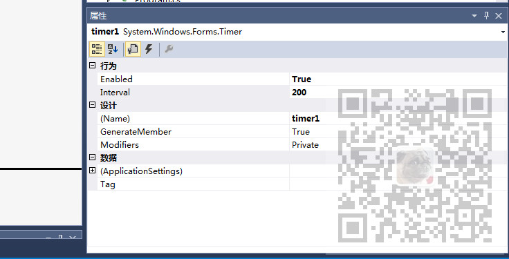

原文出处:本文由博客园博主霸道流氓提供。
原文连接:https://www.cnblogs.com/badaoliumangqizhi/p/12022622.html
原文连接:https://www.cnblogs.com/badaoliumangqizhi/p/12022622.html
场景
效果
注：
博客主页：
https://blog.csdn.net/badao_liumang_qizhi
关注公众号
霸道的程序猿
获取编程相关电子书、教程推送与免费下载。
实现
新建一个Form，设置窗体的背景颜色为黑色，然后再拖拽一个LIstBox用来存取要滚动的内容，再拖拽一个Timer组件
右击Timer组件设置其属性

将Enabled属性设置为true，表示可用，Interval表示执行的时间间隔0.2秒。
然后Timer还有一个Tick事件，表示具体要执行的方法，即每隔0.2秒要执行的操作。
5.png)
然后设置ListBox的属性和要滚动的内容
this.listBox1.BackColor = System.Drawing.SystemColors.WindowText;
this.listBox1.BorderStyle = System.Windows.Forms.BorderStyle.None;
this.listBox1.ForeColor = System.Drawing.SystemColors.InactiveCaption;
this.listBox1.FormattingEnabled = true;
this.listBox1.ItemHeight = 12;
this.listBox1.Items.AddRange(new object[] {
"逆战",
"演唱：张杰",
"在这个风起云涌的战场上",
"暴风少年登场",
"在战胜烈火重重的咆哮声",
"喧闹整个世界",
"硝烟狂飞的讯号",
"机甲时代正来到",
"热血逆流而上",
"战车在发烫",
"勇士也势不可挡",
"come on逆战 逆战来也",
"王牌要狂野",
"闯荡宇宙摆平世界",
"Oh 逆战 逆战狂野",
"在这个风起云涌的战场上",
"暴风少年登场",
"在战胜烈火重重的咆哮声",
"喧闹整个世界",
"硝烟狂飞的讯号",
"机甲时代正来到",
"热血逆流而上",
"战车在发烫",
"勇士也势不可挡",
"come on逆战 逆战来也",
"王牌要狂野",
"闯荡宇宙摆平世界",
"Oh 逆战 逆战狂野"
});
this.listBox1.Location = new System.Drawing.Point(56, 377);
this.listBox1.Name = "listBox1";
this.listBox1.Size = new System.Drawing.Size(400, 480);
this.listBox1.TabIndex = 0;
然后在窗体的Load事件中，将ListBox置于窗体最底部，即设置其距离顶部的距离为窗体的高度。
然后再上面设置的每隔0.2秒执行的方法中进行判断，如果ListBox距离顶部的位置小于负的自己的高度，即一次轮播到顶，再重新设置其距离顶部的距离为窗体高度，否则就会将ListBox举例顶部的距离减去5。
关键代码
private void Form1_Load(object sender, EventArgs e)
{
listBox1.Top = this.Height;
this.Focus();
}
private void timer1_Tick(object sender, EventArgs e)
{
if (listBox1.Top < -listBox1.Height)
{
listBox1.Top = this.Height;
}
listBox1.Top = listBox1.Top - 5;
this.Focus();
}代码下载
https://download.csdn.net/download/BADAO_LIUMANG_QIZHI/12025689